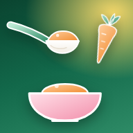

Когда пора знакомиться с новой едой
Прикорм начинают не раньше 4 и не позже 6 месяцев. Точный срок для своего малыша обсудите с педиатром.
Сроки
- Не раньше 4 месяцев. До этого кишечник и навыки глотания ещё не готовы к другой еде, кроме молока или смеси.
- Не позже 6 месяцев. Позже малышу начинает не хватать железа и цинка, и ему труднее научиться жевать густую пищу.
- Российская программа вскармливания считает оптимальным для здорового ребёнка возраст около 5 месяцев. ВОЗ советует малышам на исключительно грудном вскармливании начинать прикорм в 6 месяцев.
- Недоношенным детям и малышам с особенностями здоровья срок подбирает врач.
Как понять, что малыш готов
- Появился «пищевой интерес». Малыш наблюдает, как вы едите, просит жестами или звуками обратить на него внимание или поделиться едой. Если предложить ему ложку, он не играет с ней, а недоволен, когда она пустая. Берите малыша с собой за стол, чтобы он видел, как едите вы.
- Сидит сам или с поддержкой. Кормить малыша лёжа нельзя — он может подавиться.
- Угас рефлекс «выталкивания» — когда малыш выталкивает изо рта и предложенную еду, и пустышку.
Все эти условия не обязательно должны быть соблюдены — ориентируйтесь на своего малыша.
Принципы введения прикорма
Шаг за шагом
- Новые продукты предлагайте в первой половине дня, чтобы заметить реакцию на них.
- В каждой группе начинайте с однокомпонентных продуктов, постепенно добавляя новые и комбинированные пюре.
- Начальный объём — около ½ чайной ложки. Если в течение суток реакции нет, порцию можно смело увеличивать, а на следующий день пробовать новый продукт.
- Новые продукты не вводят во время острых инфекций и стрессовых событий в семье (переезд, выезд за город, болезнь родителей), а также после прививки — не раньше чем через 3 дня, ориентируясь на самочувствие малыша.
- Прикорм дают с ложечки до кормления грудью или детской смесью.
Если малыш отказывается
- Это нормально: чтобы привыкнуть к новому вкусу, иногда нужно 10–15 попыток.
- Не заставляйте и не уговаривайте. Предложите снова через несколько дней.
- Следите за сигналами: отворачивается, закрывает рот, отталкивает ложку — значит, наелся.
- Не используйте еду как награду или утешение.
- Ешьте вместе: малыш учится, глядя на вас.
Что и когда вводить
Примерная схема по российской программе вскармливания. Подсвечено, что подходит вашему малышу по возрасту.
- 4–6 месПервый продукт — овощное пюре или каша. Овощи с нежной клетчаткой: брокколи, цветная капуста, кабачок, тыква; в пюре добавляют растительное масло. Каши безмолочные — рисовая, гречневая, кукурузная, овсяная и другие; в кашу добавляют сливочное масло. Затем фруктовое пюре. Когда первые продукты освоены — можно знакомить с аллергенами: хорошо проваренным яйцом, рыбой, арахисовой пастой (см. «Ступеньки» в разделе «Аллергены»).Если малыш плохо прибавляет в весе или стул частый — чаще начинают с каши; при запорах и избыточном весе — с овощей.
- 6 месМясное пюре — главный источник железа. Новые овощи: картофель, батат, горошек, кукуруза, шпинат.Творог — с 6 месяцев только по назначению врача.
- 7 месБольше мяса, детское печенье. Яйцо и рыба — регулярно, если они уже введены.Фруктовое пюре — после того, как введены мясо, каши и овощи.
- 8 месТворог, кефир и детские кисломолочные напитки, хлеб, сухари. Новые овощи и фрукты: свёкла, помидор, слива, персик.Еда всё гуще: пюре с мелкими комочками.
- 9–12 месМелко порубленная еда вместо пюре, кусочки, которые малыш берёт сам. С 10 месяцев — субпродукты, красные ягоды; ближе к году — свинина, манная и пшеничная каши, цитрусовые. Еда становится похожей на семейную — но без соли, сахара и специй.К 8–10 месяцам малыш уже должен есть еду с комочками — иначе потом труднее научиться жевать.
Про сроки аллергенов. Яйцо, рыбу и другие аллергенные продукты здесь предлагается вводить по рекомендациям Европейского общества детских гастроэнтерологов (ESPGHAN): вместе с остальным прикормом, после 4 месяцев. В российской программе вскармливания 2019 года сроки позже — желток с 7 месяцев, рыба с 8. Строгого порядка продуктов ESPGHAN и ВОЗ не задают: главное — чтобы с самого начала в рационе была еда, богатая железом.
Порции по месяцам
Примерная схема введения продуктов на первом году жизни, граммы или миллилитры на порцию. Это ориентир: малыш может съедать чуть больше или меньше.
| Продукт | 4–5 мес | 6 мес | 7 мес | 8 мес | 9–12 мес |
|---|---|---|---|---|---|
| Овощное пюре | 10–150 | 150 | 150 | 150 | 150 |
| Каша | 10–150 | 150 | 150 | 180 | 200 |
| Мясное пюре1 / отварное мясо (можно на пару) | — | 5–30 / 3–15 | 40–50 / 20–30 | 60–70 / 30–35 | 80–100 / 40–50 |
| Фруктовое пюре2 | 5–50 | 60 | 70 | 80 | 90–100 |
| Яйцо (хорошо проваренное), шт.6 | понемногу | понемногу | ¼ | ½ | ½ |
| Творог3 | — | — | — | 10–40 | 50–100 |
| Рыбное пюре / отварная рыба (можно на пару)6 | понемногу | понемногу | понемногу | 5–30 | 30–60 |
| Кефир и другие детские неадаптированные молочные напитки | — | — | — | 200 | 200 |
| Детское печенье | — | — | 3–5 | 5 | 5 |
| Хлеб, сухари | — | — | — | 5 | 10 |
| Растительное масло4 | 1–3 | 3–5 | 5 | 6 | 6 |
| Сливочное масло5 | 1–3 | 3–4 | 4 | 5 | 5 |
1 без добавления овощей и круп. 2 после введения мяса, каш и овощей. 3 с 6 месяцев — только по показаниям. 4 добавка к овощному пюре. 5 добавка к каше. 6 по ESPGHAN яйцо и рыбу можно вводить с начала прикорма, после 4 месяцев, начиная с ¼ чайной ложки; объёмы по возрасту — как в таблице.
Вода. В прикорме воды меньше, чем в молоке, поэтому малышу предлагают детскую бутилированную или кипячёную воду небольшими порциями между кормлениями — около 150–200 мл в день.
Варианты продуктов для прикорма
Эти продукты можно включить в рацион малыша. Но главное — цель прикорма познакомить ребёнка с едой, которую он встретит за вашим общим семейным столом. Если вы не едите какие-то продукты или в вашей семье свои традиции питания, прививайте их малышу уже при введении прикорма. Не бойтесь пробовать — и приятного аппетита!
Овощи
Брокколи, цветная и брюссельская капуста, кабачок (цукини), тыква, белая морковь (пастернак), морковь.
с 6–7 мес Авокадо, горошек, кукуруза, картофель, батат, шпинат, репа, стручковая фасоль.
с 8–9 мес Свёкла, баклажан, помидор, сельдерей, спаржа, артишок; болгарский перец — после 10 мес.
Каши
Рисовая, гречневая, кукурузная, овсяная, пшённая, киноа, амарантовая, сорго, теф, полбяная, мультизлаковая.
ближе к 12 мес Манная, пшеничная, ячневая, перловая, ржаная.
Мясо
Индейка, кролик, цыплёнок, телятина, говядина, конина, оленина.
с 10 мес Субпродукты (печень, сердечки, язык) — не чаще 1–2 раз в неделю.
ближе к 12 мес Свинина, баранина, утка.
До года не вводят колбасы и сосиски, копчёное мясо, крепкие мясные бульоны.
Фрукты
Яблоко, груша, чернослив, банан, абрикос (без кожи, после термической обработки).
с 8–9 мес Персик и нектарин без кожицы — не чаще 1 раза в неделю; слива, жёлтая малина, белая черешня, киви (только спелый, понемногу).
с 10–12 мес Красные ягоды (клубника, малина, красная смородина), манго, ананас, папайя.
ближе к 12 мес Цитрусовые и виноград.
Рыба
Треска, пикша, минтай, хек, сайда, камбала, морской окунь, судак. Без костей, хорошо проваренная.
с 4–6 мес Можно вводить вместе с остальным прикормом — и белую, и жирную рыбу: форель, сёмга, кета, горбуша, нерка, сибас, дорадо.
После морской рыбы — речная, по желанию: щука, сазан, речной окунь.
С осторожностью, после 12 мес: кижуч, чавыча, стерлядь, осётр.
Яйцо и другие аллергены
с 4–6 мес Яйцо — только хорошо проваренное (вкрутую, омлет), сразу целиком: и желток, и белок.
с 4–6 мес Гладкая арахисовая паста, кунжутная паста (тахини), молотые орехи — тонким слоем или размешав в пюре.
Как вводить — в разделе «Аллергены».
Яйцо, рыба, орехи и другие аллергены
Откладывать аллергенные продукты, скорее всего, не нужно. По данным исследований, знакомство с яйцом и арахисом в 4–6 месяцев может снижать риск аллергии на них, а позднее введение от аллергии не защищает. Поэтому их можно предлагать вместе с остальным прикормом и постараться ввести до года.
Ступеньки знакомства с аллергенами
Пример порядка для здорового малыша, когда первые продукты прикорма уже освоены. Строгой последовательности нет — главное, по одному новому аллергену за раз.
- ГлютенКаша с глютеном — овсяная, полбяная, пшеничная. Вначале небольшими порциями.
- Молоко в составе блюдНемного коровьего молока в каше или пюре. Как напиток — только после года.
- ЯйцоТолько хорошо проваренное: ¼ чайной ложки размятого крутого яйца или омлета в пюре.
- Арахис¼ чайной ложки гладкой арахисовой пасты, размешанной в пюре. Целые орехи — нельзя.
- РыбаБелая морская, затем жирная — хорошо проваренная, без костей.
- Кунжут, орехи, сояТахини, молотые миндаль, кешью, фундук, соевые продукты.
Как вводить
- Один новый аллерген за раз, в первой половине дня, начиная с ¼ чайной ложки.
- Если реакции нет — увеличивайте порцию, а на следующий день можно пробовать следующий продукт.
- Если малыш перенёс продукт хорошо, продолжайте давать его регулярно, примерно 2 раза в неделю: так закрепляется переносимость.
- Орехи и арахис — только пастой или молотыми. Целые орехи до 4 лет нельзя.
- Яйцо — только хорошо проваренное, сырое и недоваренное до года нельзя.
Сначала посоветуйтесь с врачом
- У малыша тяжёлая экзема.
- Уже была аллергия на какой-то продукт, например на яйцо или молоко.
- Аллергия, экзема или астма у родителей, братьев, сестёр.
Таким детям аллергены тоже лучше не откладывать надолго, но вводить по плану врача: иногда перед этим нужно обследование.
Молочная лестница
Только для малышей с подтверждённой аллергией на белок коровьего молока и только по плану врача. Это способ постепенно вернуть молоко в рацион: сначала в сильно запечённом виде, потом — в менее обработанном. Обычно начинают в 9–12 месяцев или после 6 месяцев безмолочной диеты.
- Печеньес молоком в составе, запечённое
- Кекс, маффин
- Блинчики, оладьи
- Твёрдый сыр
- Йогурт
- Молоко
На каждой ступеньке малыш остаётся, пока хорошо переносит порцию, — от недели до нескольких месяцев. При реакции возвращаются на предыдущую ступеньку и обращаются к врачу. Дома лестницу не используют при немедленных (IgE-опосредованных) реакциях без плана аллерголога и при энтероколите, вызванном пищевым белком (FPIES). Похожая «яичная лестница» есть и для детей с аллергией на яйцо.
Что нельзя и как не подавиться
Строго запрещено
- Добавлять в еду малыша сахар, соль, специи, сахарозаменители
- Цельное молоко до годаРиск белковой нагрузки на почки и дефицита железа. В небольшом количестве в составе блюд — можно.
- Мёд до года — в любом видеРиск ботулизма.
- Соки, сладкие морсы, компоты, газированные напиткиСоки до года не советуют: пользы в них мало, а риск кариеса и лишнего веса есть.
- Сырые мясо, рыба, яйцо, икра, солёная рыба, мягкие рассольные сырыИз-за риска кишечных инфекций.
- Колбасы, сосиски, копчёности, крепкие мясные бульоны
Чем можно подавиться
До 4 лет — не давать или обязательно измельчать:
- Целые орехи, семечки, попкорн, твёрдые конфеты, жвачка.
- Целый виноград, черри, ягоды с косточкой — режьте на четвертинки и мельче.
- Сырая морковь, яблоко, твёрдые кусочки — отварите до мягкости или натрите.
- Сосиски, колбаса, кусочки жёсткого мяса, сыра — не давать или очень мелко порезать.
- Толстый слой арахисовой пасты — размазывайте тонко.
Рвотный рефлекс или удушье?
Кормите малыша только сидя прямо и всегда будьте рядом. Не кормите в машине, на ходу, лёжа.
Если малыш подавился
- Может кашлять и плакать — дайте откашляться, будьте рядом.
- Не может дышать, плакать, кашлять — уложите малыша животом на свою руку или бедро, головой вниз, поддерживая голову, и сделайте до 5 сильных хлопков ладонью между лопатками.
- Не помогло — переверните на спину на коленях или твёрдой поверхности, большими пальцами нажмите на грудину чуть ниже линии сосков до 5 раз.
- Если не помогло — звоните 112 или 103, продолжайте чередовать 5 хлопков и 5 нажатий до приезда помощи.
- Если делали нажатия на грудь — малыша обязательно должен осмотреть врач, даже если всё прошло.
Прикорм кусочками (BLW)
Малыш с самого начала ест сам — мягкие кусочки руками, вместо пюре с ложки. Можно сочетать оба способа.
Что известно
- Европейские эксперты (ESPGHAN, 2017) считают, что данных пока мало, чтобы назвать один способ лучше другого.
- В исследовании BLISS (Новая Зеландия, 2016) малыши, которых кормили кусочками по правилам безопасности, давились не чаще, чем при кормлении с ложки. Но в обеих группах родители часто давали опасные продукты.
- Главный риск — малыш съест мало железа и калорий. Поэтому в каждый приём пищи нужна еда, богатая железом, и что-то сытное.
Как делать безопасно
- Начинайте не раньше 6 месяцев, когда малыш сидит сам и тянет еду в рот.
- Кусочки размером с палец взрослого, такие мягкие, что легко раздавливаются между большим и указательным пальцами: отварные овощи, мягкие фрукты, котлетка, омлет.
- В каждом кормлении — продукт с железом (мясо, рыба, яйцо, бобовые) и что-то сытное (каша, хлеб, картофель).
- Малыш сидит прямо, вы всё время рядом. Никаких продуктов из списка «чем можно подавиться».
- Если малыш родился недоношенным, у него проблемы с весом, глотанием или развитием — сначала обсудите с педиатром.
Баночки или своё?
Подходят оба варианта. Важно, чтобы еда была безопасной и подходила малышу по возрасту.
Детское питание из магазина
- Российская программа вскармливания советует начинать с продуктов промышленного выпуска: у них гарантированный состав, безопасность и нужная степень измельчения.
- Каши для малышей на грудном вскармливании выбирайте обогащённые железом и витаминами.
- Смотрите на возраст на упаковке и состав: без соли и добавленного сахара; в мясном пюре — побольше мяса.
- Открытую баночку храните в холодильнике и используйте в срок, указанный на упаковке. Не кормите прямо из баночки, если планируете оставить остаток.
Домашняя еда
- Мойте руки и посуду, продукты — свежие, хорошего качества.
- Овощи и мясо варите или готовьте на пару до мягкости, измельчайте блендером, позже — вилкой.
- Без соли, сахара, бульонных кубиков и специй.
- Готовьте небольшими порциями и храните в холодильнике недолго; остатки с тарелки малыша не храните.
- Для готовки и питья используйте детскую бутилированную или кипячёную воду.
Дневник прикорма
Отмечайте, что малыш уже попробовал, когда и была ли реакция. Записи хранятся только на вашем телефоне. Покажите дневник педиатру на приёме.
Когда к врачу
103 Сразу скорая
- Отёк губ, лица, языка, затруднённое или шумное дыхание после еды
- Малыш подавился и не может дышать, плакать, кашлять
- Резкая вялость, бледность, повторная рвота после нового продукта
К педиатру
- Сыпь, зуд, покраснение кожи, рвота или жидкий стул после нового продукта
- Кровь или слизь в стуле
- Малыш отказывается от любой новой еды несколько недель подряд, давится при любых комочках
- Плохо прибавляет в весе или резко набирает
- Запоры, которые не проходят после изменения питания

Сохраните памятку на телефон
После первого открытия памятка работает без интернета — в очереди к кабинету, в дороге, без мобильной сети. Добавьте её на экран «Домой», чтобы открывать как приложение.
Еда — это знакомство, а не экзамен
Малыш учится есть несколько месяцев. Спокойствие, разнообразие и терпение важнее съеденных граммов.